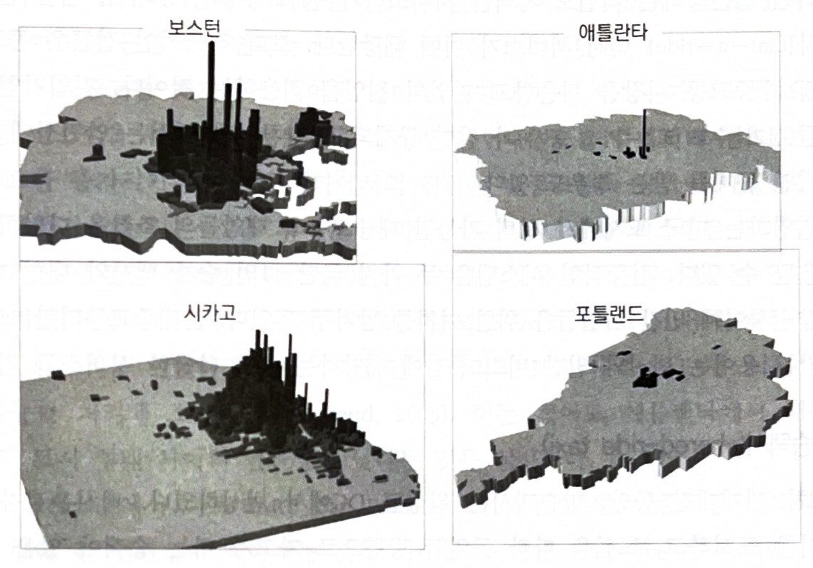

11주차. 도시교통
지난 시간 — 도시주택과 공공정책
여과
주택은 내구적이라 품질사다리를 내려감. 얼마나 내려보낼지는 두 하부시장의 가격 차이가 정함
그래서 한 하부시장의 정책이 다른 하부시장으로 번짐. 신규 주택을 금지하면 낮은-품질 가격이 두 번 오름
네 가지 정책
공공주택은 1달러로 0.24달러의 편익을 줌. 바우처는 같은 후생을 1/4 비용으로 줌
되풀이된 구조
공급측면 정책은 밀어내기 때문에 넣은 만큼 늘지 않았고, 수요측면 바우처는 가격을 올려 중간-소득 가구에까지 번졌음
주택담보대출 지원은 사적비용을 사회비용보다 낮춰 주택자본을 효율적 수준 이상으로 늘림
거기서 나온 물음
가격이 사회적 비용을 반영하지 못할 때 무슨 일이 생기는지 봤음. 도로에서는 그 일이 매일 일어남
→ 오늘은 도시교통임. 18장은 자동차와 도로의 세 외부효과(혼잡·환경·교통사고)와 그 정책대응, 19장은 통행수단 선택과 대중교통 시스템의 선택을 봄
CHAPTER 18 자동차와 도로
PART 04 도시교통의 첫 장 — 비효율을 낳는 세 외부효과 · 교재 p.393~412
이제까지는 가격이 사회적 비용을 반영하지 못할 때 생기는 비효율을 주택에서 봤음
이 장에서는 그 일이 매일 일어나는 곳, 도로를 봄
자동차는 세 가지 외부비용을 냄 — 혼잡 · 환경의 저하 · 교통사고
외부비용에 대한 경제적 접근은 외부성을 내재화하는 세금임. 의사결정자가 자기 선택의 전체 비용을 지게 하는 것
→ 일단 외부비용이 내재화되면 시장이 알아서 작동함 — 개별 의사결정자가 효율적인 선택을 함
→ 오염의 효율적 수준이 0이 아니듯 혼잡의 효율적 수준도 0이 아님
01 혼잡의 외부효과
한 대가 더 들어오면 나머지 모두가 느려진다 · 교재 p.393~401
사적 비용 · 외부 비용 · 사회적 비용
통행량이 v₀ 를 넘어서면 차 한 대가 더 들어올 때마다 나머지 모두의 속도가 떨어져 시간비용이 올라감. 그 몫이 외부비용임
→ v′ 에서 사적비용 4.00 · 사회적비용 6.40 이므로 외부비용은 2.40. v″ 에서는 4.80 과 9.00 이라 4.20 으로 더 커짐
→ 시장균형은 수요와 사적 비용이 만나는 점 c(v*). 효율적 통행량은 수요와 사회적 비용이 만나는 점 e(v^E)임. v* > v^E — 시장은 지나치게 많이 통행함
혼잡세는 격차만큼만 매긴다
효율적 통행량 v^E 에서 사적비용과 사회적비용의 격차는 2.40달러임. 그만큼을 세금으로 매김
사적비용 + 세금 곡선이 수요와 만나는 곳이 바로 v^E 임. 통행량이 v* 에서 v^E 로 줄어듦
음영이 이득임 — 사라진 통행들에 대해 사회적 비용이 지불용의를 넘던 몫
→ 세금은 통행을 없애려는 것이 아님. 남은 통행은 사회적 비용을 다 치르고도 할 만한 통행임
→ 도로 이용자도 우회 운전자도 이득과 손실을 함께 봄. 혼잡세를 도입한 도시는 살 만해져 사람이 모여듦
혼잡세를 매긴 도시는 커진다
4주차 7장의 도시효용곡선을 다시 씀. 노동자 12백만명인 지역에 같은 도시가 둘, 각 6백만명임
초기에는 두 도시 모두 혼잡이 가격에 반영되지 않음. 균형은 점 a, 공통 효용 u*
한 도시가 수입-중립 혼잡세를 도입함 (걷은 돈만큼 소득세를 깎음). 효율이 올라 곡선이 위로 옮겨 가고 정점도 오른쪽으로 감
→ 즉각적으로 그 도시의 효용이 u*(점 a)에서 u″(점 b) 로 오름
→ 노동자가 옮겨 와 그 도시는 7백만, 다른 도시는 5백만이 됨. 공통 효용은 u** 로 수렴함 (점 c·d)
→ u** > u* — 한 도시의 혼잡세가 지역 전체의 효용을 올림. 편익이 지역 안의 다른 도시로 퍼짐
02 혼잡세 시행
실제로 걷을 수 있는가, 얼마인가 · 교재 p.401~405
첨두시간에만, 그리고 도시마다 다르게
수요가 낮으면 사적 비용곡선의 수평 구간에서 만나 혼잡이 없고 세금도 0 임. 수요가 높을수록 세금이 커짐
효율적인 첨두시간 혼잡세는 마일당 $0.085. 차량인식시스템으로 자동 징수하면 마일당 $0.24 일 때 한 달 20회 통행에 $48.00 의 청구서가 나간다
출처: Parry and Small, American Economic Review 99, 2009 (교재 그림 18−8, p.402)
→ 대안은 가치 기반 가격책정임. 통행료를 내면 혼잡 없는 차선(HOT Lane)을 쓸 수 있게 해 통행을 차별화된 상품으로 만듦
03 환경 측면의 외부효과
왜 오염세가 아니라 휘발유세인가 · 교재 p.405~408
휘발유세의 시장효과
자동차는 대기오염과 온실가스라는 두 환경 외부효과를 냄. 경제적 접근은 오염세임
오염량을 직접 재기 어려워 실제로는 휘발유에 세금을 매김. 대기오염물질 몫은 $0.26임 (마일당 $0.013 × 갤런당 20마일)
$s = \dfrac{\Delta p^{*}}{\text{Tax}} = \dfrac{e_S}{e_S - e_D}$
수요탄력성 −1.0, 공급탄력성 1.0 이면 $s = 1/(1-(-1)) = 1/2$ — 절반만 소비자에게 전가됨
→ 세금 0.32달러를 매기면 공급곡선이 그만큼 올라가 점 b 는 4.32달러가 되지만, 균형가격은 점 c 의 4.16달러에 그침
→ 나머지 절반은 생산요소 공급자가 부담함
04 교통사고로 인한 외부효과
마일당 0.14달러 중 얼마가 남의 몫인가 · 교재 p.408~412
사고비용의 과소가격책정
주행 마일당 사회적 비용
| 사망 또는 부상 | 0.103 |
| 생산성 손실 | 0.013 |
| 의료비 | 0.008 |
| 재산 손해 | 0.007 |
| 법률, 경찰, 소방 | 0.004 |
| 보험 행정 | 0.003 |
| 교통 지연 | 0.002 |
| 합계 | 0.140 |
출처: Small and Verhoef, 2007 · Parry, Journal of Urban Economics 56, 2004 (교재 표 18−1, p.409)
→ 이 중 $0.061 이 운전자가 지지 않는 외부비용임
음영이 과소가격책정의 효율성 손실이다
→ 외부비용은 운전자마다 다름 — 음주 운전자는 마일당 $0.427(평균의 약 7배), 25세 미만은 $0.109, 25~70세는 $0.034
→ 위험보상 — 에어백이 한계비용을 낮추면 운전자가 속도를 43 → 46마일로 올려 안전장비의 효과가 일부 상쇄됨
CHAPTER 19 도시 대중교통
18장이 도로였다면 이 장은 그 대안이다 · 교재 p.421~437
“뉴웍, 필라델피아, 피츠버그, 그리고 보스턴 내 실제 운행되고 있는 전차는 단골손님과 정부의 지원이 부족하여 운영에 어려움을 겪고 있는 반면, 수백만 명의 사람들은 어디로도 가지 않는 모형 기차를 타기 위해 디즈니랜드로 무리를 지어 간다.” — 케니스 잭슨
도시 교통에 대한 두 번째 장에서 대중교통의 경제학을 봄
미국에서 대중교통의 시장점유율은 5%보다 낮지만 다른 나라의 많은 도시에서는 훨씬 높음
두 관점에서 봄 — 개인 통행자가 수단을 고르는 문제와, 지방정부가 교통시스템을 설계하는 문제
→ 18장에서 본 외부효과가 가격에 반영되지 않는 한 이 선택은 기울어진 운동장 위에서 이뤄짐
01 수단선택: 개인 통행자
무엇이 통행자의 계산에 들어가는가 · 교재 p.421~427
통행자는 무엇을 더해서 고르는가
시간에도 값이 붙음 — 도보·대기는 분당 $0.40, 차량 내는 분당 $0.20. 기다리는 시간이 타고 가는 시간보다 두 배 비쌈
| 자동차 | 버스 | 철도 | |
|---|---|---|---|
| 금전적 비용($) | 6 | 3 | 3 |
| 도보·대기(분) | 0 | 20 | 45 |
| 도보·대기 비용($) | 0 | 8 | 18 |
| 차량 내(분) | 80 | 90 | 60 |
| 차량 내 비용($) | 16 | 18 | 12 |
| 총비용 | 22 | 29 | 33 |
버스는 승객을 태우려 정차해 차량 내 시간이 자동차보다 길다. 철도는 혼잡이 없어 차량 내 시간이 짧지만 역 간격이 넓어 도보·대기가 길다 (교재 표 19−1, p.424)
→ 이 예에서 통행자는 자동차를 고름 (22 < 29 < 33). 금전적 비용은 자동차가 가장 비싼데도 시간비용이 결과를 뒤집음
→ 실제로도 버스가 대중교통 통근의 절반 이상을 나름. 전차(경전철)의 몫은 매우 작음
무엇이 이 계산을 뒤집는가
자동차 22달러 대 버스 29달러의 격차를 좁히는 두 가지 변화
인구밀도의 증가
정거장이 촘촘해지고 배차가 잦아져 도보·대기 시간이 줄어듦
버스 총비용이 29 → 16 으로 내려 자동차(22)를 역전함
철도는 18 이 되어 역시 자동차보다 싸진다
임금의 감소
시간의 기회비용이 낮아지면 시간비용의 비중이 줄어 금전적 비용이 싼 수단이 유리해짐
자동차 10.00 · 버스 9.50 · 철도 10.50 으로 버스가 앞섬
대중교통 수요의 가격탄력성
| 단기 | 장기 | |
|---|---|---|
| 첨두 | −0.40 | −0.24 |
| 비첨두 | −0.80 | −0.48 |
| 전체 | −0.50 | −0.30 |
→ 모두 1보다 작아 비탄력적임. 요금을 10% 내려도 승객은 5%만 늘어남. 비첨두가 첨두보다 두 배 탄력적임
02 대중교통의 비용과 가격책정
효율적인 요금은 왜 적자를 내는가 · 교재 p.427~431
규모의 경제가 적자를 부른다
승객이 늘면 배차가 잦아져 대기시간이 줄고, 고정비가 나뉘어 평균비용이 내려감. 한계비용은 그보다 더 아래에 있음
효율적인 요금은 한계비용과 같아야 함. 점 a 에서 요금 pᴱ, 승객 Rᴱ 임
그런데 그 요금에서 평균비용은 acᴱ 로 더 높음. 음영 직사각형만큼 적자가 남
→ 적자를 없애려 요금을 p′ 로 올리면 승객이 R′ 로 줄어듦
→ 그 예산균형 승객수는 비효율적임. R′ 에서 Rᴱ 까지의 승객은 한계편익이 한계비용을 넘는데도 타지 못했음
→ 그래서 대중교통 보조금의 경제적 근거가 생김
03 대중교통 시스템 선택
버스인가 경전철인가 — 답은 밀도에 있다 · 교재 p.431~437
경전철은 언제 운영 가능한가
교통 설계자의 관점으로 봄. 세 시스템의 장기 평균비용을 통행량에 따라 비교함
승용차와 도로는 수평임 — 교통량이 늘면 통행시간을 유지하려 도로를 넓힌다고 가정하기 때문
버스는 시간당 5~10천명 사이에서 승용차보다 싸짐. 철도와 지선버스는 10천명 부근에서 승용차를 따라잡음
→ 경전철이 버스를 이기려면 아주 높은 통행량이 필요함. 그 통행량은 높은 인구밀도에서만 나옴
→ 오른쪽 지도가 그것을 보여줌. 보스턴·시카고처럼 밀도가 높은 도시와 애틀란타·포틀랜드처럼 낮은 도시의 차이임

오설리반, 『오설리반의 도시경제학』 제9판, 박영사, 2022, 그림 19−7 (p.435)
교통기술이 도시의 모양을 만든다
앞 장들에서 보았듯이, 20세기 초의 대규모 단일도심도시는 세 가지의 결합에서 나왔음
통근자를 위한 전차
제조업 생산요소와 생산물을 나르는 마차
도심 안 사무 종사자들의 대면시간을 위한 보도
→ 7주차에서 본 것이 여기서 다시 나옴 — 교통기술이 바뀌면 도시의 모양이 바뀜
→ 그래서 교통정책은 교통만의 문제가 아니라 토지이용 정책이기도 함
Q & A
권규상 Kyusang Kwon
(kyusang.kwon@chungbuk.ac.kr)